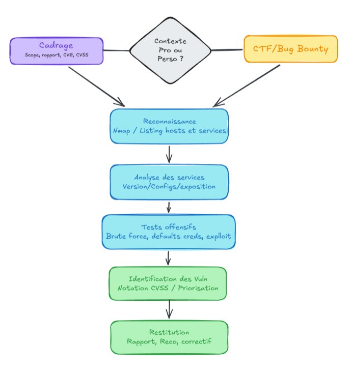
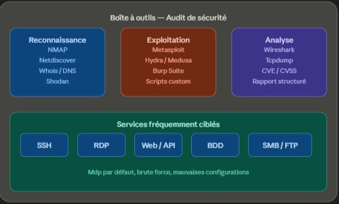

Audit de sécurité
Présentation
Cette réalisation regroupe un ensemble d'actions offensives menées dans des contextes variés : audits de sécurité internes en entreprise, pentest externe sur une filiale, participation à des CTF (Capture The Flag) et programmes de bug bounty. Ce sont des expériences distinctes par leur contexte et leurs enjeux, mais qui se rejoignent toutes autour d'une même démarche : identifier les failles avant que quelqu'un de malveillant ne le fasse.
Objectifs, contexte et enjeux
L'objectif est toujours le même : trouver les erreurs de configuration et les vulnérabilités présentes sur le périmètre étudié. Ce qui change, c'est l'enjeu.
Dans un cadre professionnel, l'enjeu est critique. Une faille non détectée peut avoir des conséquences directes sur la confidentialité des données, la continuité de service ou la réputation de l'organisation. Le niveau d'exigence est donc élevé, la méthodologie rigoureuse, et le livrable attendu est un rapport structuré et exploitable.
Dans un cadre personnel (CTF ou bug bounty), l'enjeu est différent. Il n'y a pas de système en production à protéger, pas de client à rassurer. En revanche, les erreurs sont entièrement à ma charge, et c'est précisément ce qui en fait un terrain d'apprentissage particulièrement efficace. On apprend infiniment plus de ses propres erreurs quand personne d'autre n'en subit les conséquences.
Les étapes

Schéma de méthodologie — du cadrage à la restitution
Dans un contexte professionnel, je commence systématiquement par cadrer le périmètre. Je liste les éléments inclus dans le scope, je détermine le format du rapport attendu, et je définis la grille de notation qui sera utilisée pour qualifier les vulnérabilités. Cela passe par la définition des CVE (Common Vulnerabilities and Exposures), qui sont des identifiants standardisés attribués aux vulnérabilités connues, et par l'utilisation du score CVSS (Common Vulnerability Scoring System), qui permet de mesurer objectivement la criticité d'une faille sur une échelle de 0 à 10, en tenant compte de facteurs comme l'exploitabilité, l'impact sur la confidentialité, l'intégrité et la disponibilité. Cette grille permet de prioriser les correctifs de manière rationnelle plutôt qu'intuitive.
Dans tous les contextes, la phase technique suit la même logique. Je commence par un scan réseau avec NMAP afin de lister les hôtes actifs, les services exposés et les versions en cours d'exécution. Ce premier inventaire me donne déjà une vision claire de l'état de l'infrastructure : ce qui est à jour, ce qui ne l'est pas, ce qui est correctement isolé ou au contraire trop exposé.
Je teste ensuite les vecteurs d'attaque les plus courants : brute force, mots de passe par défaut, mauvaises configurations sur les services récurrents. Dans la grande majorité des cas, les mêmes services reviennent : bases de données mal sécurisées, interfaces web sans authentification robuste, accès SSH, RDP, FTP ou SMB mal configurés. Ces points d'entrée sont classiques, mais ils restent parmi les plus exploités en conditions réelles.

Outils utilisés — reconnaissance, exploitation, analyse et services ciblés
Les acteurs
Dans un cadre professionnel, j'interviens en coordination avec les équipes internes : les responsables du système d'information pour la définition du scope, et les équipes techniques pour la restitution des résultats. Dans un cadre personnel, je travaille seul, en m'appuyant sur des communautés en ligne et les échanges avec des pentesters de mon réseau.
Les résultats
En entreprise, les audits ont permis d'identifier des vulnérabilités concrètes et d'apporter des recommandations exploitables, avec une priorisation claire basée sur les scores CVSS. Certaines failles identifiées ont conduit à des corrections immédiates sur des services exposés.
Sur les CTF et bug bounty, les résultats sont avant tout personnels : une progression constante dans la compréhension des vecteurs d'attaque, une meilleure lecture des environnements cibles, et une capacité d'analyse qui s'affine à chaque challenge.
Les lendemains du projet
À court terme, ces expériences ont directement alimenté mes compétences en administration réseau et en configuration système, en me forçant à comprendre les failles de l'intérieur. À distance, elles ont structuré ma façon d'aborder n'importe quel projet technique : je pense naturellement à la sécurité dès la conception, pas après coup. Aujourd'hui, cette compétence offensive est un complément direct à mon approche défensive, et les deux se renforcent mutuellement.
Regard critique
Ce qui m'a le plus marqué dans ces expériences, c'est la récurrence des mêmes erreurs. Des mots de passe par défaut, des services inutilement exposés, des mises à jour non appliquées : des problèmes simples, connus, documentés, et pourtant encore omniprésents. Cela m'a convaincu que la sécurité n'est pas qu'une question de compétence technique, c'est aussi une question de rigueur et de culture au sein des organisations.
Ma valeur ajoutée sur ces missions ne réside pas uniquement dans la capacité à trouver des failles, mais dans la capacité à les expliquer clairement, à les prioriser intelligemment et à proposer des correctifs réalistes et adaptés au contexte.